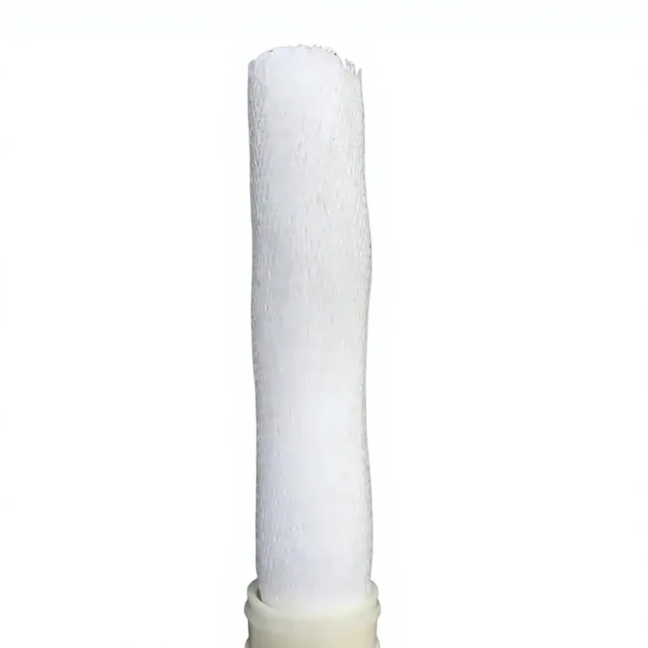
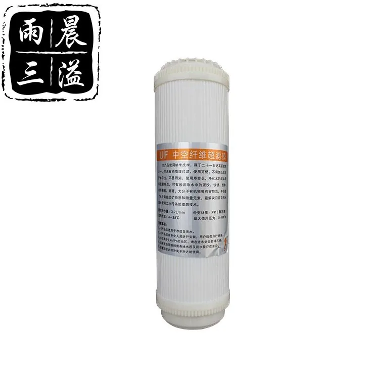

Lõi siêu lọc (UF)
- Màng
- Sợi rỗng
- Hệ thống lọc
- 0.01μm
Bộ lọc màng sợi rỗng UF dành cho máy lọc nước dùng trọng lực, máy cấp nước và hệ thống dùng trong nhà bếp. Có các tùy chọn tùy chỉnh vỏ, đầu nối, lưu lượng và nhãn riêng.
So sánh các model được liệt kê và mở trang chi tiết. Các bản ghi model được tính riêng với các kích thước có thể tùy chỉnh; mức độ phù hợp phải được xác nhận cho dự án của bạn.



Bộ lọc màng UF sử dụng các bó màng sợi rỗng để giảm độ đục, chất rắn lơ lửng, chất keo và vi sinh vật, đồng thời giữ lại các khoáng chất hòa tan. Chúng thường được lựa chọn cho các thiết bị cung cấp nước uống hoạt động ở áp suất thấp và các hệ thống không cần xả nước thải RO.
Các ứng dụng bao gồm máy lọc nước dùng trọng lực, máy cấp nước treo tường, bộ lọc nước nhà bếp, lọc bảo vệ trước công đoạn RO và hệ thống lọc nước gia đình nhỏ gọn. Bên mua có thể chỉ định diện tích màng và lưu lượng để phù hợp với thiết kế thiết bị tại địa phương hoặc tiêu chuẩn lõi lọc thay thế.
| Màng | Màng UF sợi rỗng |
|---|---|
| Phân hạng kích thước lỗ màng | Thuộc cấp 0.01 micron |
| Chức năng | Giảm độ đục, chất keo và vi sinh vật |
| Vận hành | Thiết kế hoạt động ở áp suất thấp hoặc có sự hỗ trợ của trọng lực |
| Tùy chọn OEM | Vỏ, đầu nối, diện tích màng và thùng carton |
Đối với các dự án UF mang nhãn riêng, Yuchen Water có thể điều chỉnh vật liệu màng, hình dạng vỏ, đầu nối, màu nắp, nhãn, túi đóng gói riêng từng sản phẩm, hộp in màu và thùng carton đóng gói tổng. Nhà máy có thể hỗ trợ tích hợp vào thiết bị và các chương trình cung ứng bộ lọc thay thế của nhà phân phối.
Khi tìm nguồn cung bộ lọc màng UF, nên so sánh vật liệu sợi rỗng, kích thước lỗ danh định, lưu lượng mục tiêu, kiểu đầu nối, áp suất vận hành và khả năng tương thích với máy lọc nước hoặc máy cấp nước.
Bộ lọc sợi rỗng UF — Chức năng: Giảm chất keo, độ đục và vi sinh vật.
Gửi yêu cầuCó. Chi tiết về bao bì và ghi nhãn được xác nhận theo model và phạm vi đơn hàng.
Cung cấp model, số lượng và nơi giao hàng để nhận báo giá.